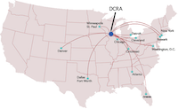

Most travelers to the United States, except for nationals of countries in the Visa Waiver Program, must hold both a valid visa and a passport that is valid six months longer than the intended visit.
(Information on visas and the Visa Waiver Program here.)
For those traveling by air, Madison is served by the
Madison/Dane County Regional Airport (MSN) that connects
to several major airline hubs (click to enlarge).

Other reasonably convenient airports:
Milwaukee's General Mitchell International airport (MKE) is ~80 miles east of Madison, with a regular Badger Bus service between the two cities. The Badger Bus (phone 1-877-292-8259) leaves outside the baggage claim area (lower level, south end of airport). The trip to Madison takes ~2 hours. The service departs daily every 2.5 hours between 9:30 a.m. and 7:30 p.m. and and costs ~$25. The last bus stop is UW Memorial Union on the UW campus.
Chicago's O'Hare International airport (ORD) is ~150 miles to the South East of Madison and has an hourly Van Galder coach service between the two cities. The Van Galder bus leaves from the Chicago airport and arrives at the Memorial Union in Madison right on campus. From Chicago O'Hare, take the Van Galder Bus (phone 1-800-747-7407) from either the International Terminal 5 (lower level, gate 5E) or the Bus Center (in the main parking garage between terminals 1, 2 and 3). The trip to Madison is ~3 hours. The coach departs daily about every hour between 6 a.m. and 11 p.m., and costs ~$29 one way. The last stop is UW Memorial Union.
{kind=link}